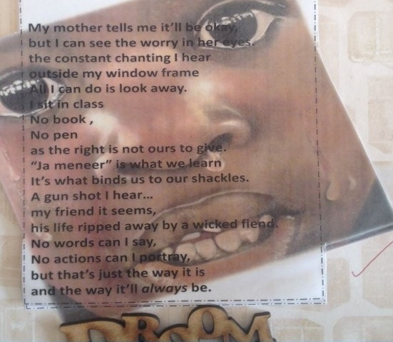

Imagining themselves going through the psychological and emotional trauma that people has faced, reminded students of how people do not always get to choose their circumstances. It thus remind them they must respect and support those who, through no fault of their own, are in difficult situations.
Tolerance and Respect

My mother tells me it'll be okay,
but I can see the worry in her eyes.
the constant chanting I hear,
outside my window frame.
All I can do is look away.
I sit in class
No book,
No pen,
as the right is not ours to give.
"Ja meneer" is what we learn
It's what binds us to our shackles.
A gun shot I hear....
my friend it seems,
his life ripped away by a wicked fiend.
No words can I say,
No actions can I portray,
but that's just the way it
and the way it'll always be

In one reflection, the boy says now he understands his father's situation better. He thought about his father used to live in an informal settlement which doesn't have heat and running water. He started to understand that his father cannot help him with his work because he himself didn’t have the chance to get an education. Now he knew how much his father achieved by sending him to a good school and he is proud of him.
A feeling of injustice
When one sees others being treated unfairly unjustly getting less than they deserve, being deprived of their rights, or being punished too severely--the preference for fairness is involved, and this may transform empathic distress into a feeling of injustice, including motivation to night the wrong.
Questioning the government
“Has the struggle really ended? Do you think there is still some form of apartheid in schools today? Is the work of which you were part of laying the foundation now complete? Apartheid has been removed from the law-books, but after 20 years is it really gone? Are we a truly integrated country? Is our past just a reflection our present? Do you think there is evidence of the separation today? Is current South Africa better than the Apartheid era and how so?”
The real story is what the government of today does with the freedom, with apartheid society needed to remember who they are and with liberation they need to remember whom they want to be. So we must never forget that there is a huge gap between the haves’ and the have-nots and for the poor like myself it does not mean if we do not have we do not have the right to quality education.
Arousal of empathic distress
The way she was talking really got to me and made me realise that it was very painful living in those days I also became very emotional and upset when she told me about the segregation and how they were moved like animals who did not have any habitat.
There are things that he mentioned that shocked me. He told me like three people that he saw – men beaten and insulted by strange words that I can’t even mention. ’ The salary they earned was less than even R500 a week. That is so shocking to me because we find out our families, we have one breadwinner. For one breadwinner to earn that income is not going to make any difference. It’s just disappearing to food and transport. And it’s not going to exceed maybe to education and some stuff
Understanding their own community
When students think about poverty and their present living conditions, they do not put the barrier in history into place. However, students living in the township need to learn history to understand that the current problems prevailing in the townships are because their community is based on a very disturbed foundation.
The people who moved to Mitchell’s Plain during the Apartheid period should be proud for building up their communities from practically nothing. But the community is also caught up with cycles of unemployment and poverty.”
The oral history project made her aware of the efforts and contributes people from the Neighborhood Watch made to diminish crimes in the township community.